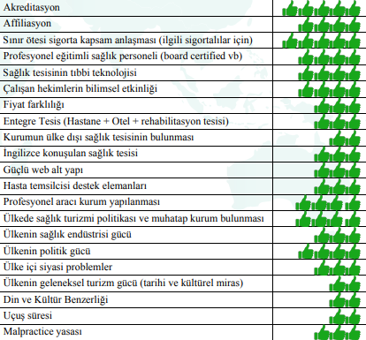

Medikal Turizmin Gelişimini
Sağlayan Etkenler
Sağlık turizminde yer alabilme koşulları ve elde
edilecek başarının sürdürebilirliğinin temel bazı
kriterleri bulunmaktadır. Sağlık turizmi içinde
yer alan kişilerin,önemli bir kısmının görece
bizden daha iyi bir ekonomik bölgeden geldiği
ve bizdeki hizmeti tercih edebilmeleri için en
az onların bulundukları bölgede verilen sağlık
hizmeti kalitesinde bir hizmeti daha az maliyetle
talep ettikleri unutulmamalıdır. Dünya genelinde
medikal turizmi geliştiren birçok etken mevcuttur.
Bu etkenleri basitçe aşağıdaki şekilde irdelemek mümkündür;
- Artan cepten harcamalar: ABD, Kanada gibi gelişmiş batılı ülkelerde, sağlık hizmetleri
sunumunda kamunun payının çok azalması ve özel sektöre devredilmesi nedeniyle sağlık
harcamaları ülke ekonomisini etkiler boyuta gelmiştir. Önceleri kamunun sistem dışına
çıkması ile kendilerine geniş bir alan bulan sağlık sigorta poliçe sağlayıcıları ise kısa bir süre
sonra hastanelerin talep ettiği ücretlerin tahsil edilen sigorta rakamları ile karşılanmasının
güçlüğünü görmüşlerdir. Bunun üzerine birçok işlem geri ödeme sisteminden çıkarılmıştır.
Toptan sağlık hizmeti poliçesi yerine medikal hizmet odaklı poliçelere dönülmüştür. Bu
da birçok hastalığın kapsam dışı kalmasına neden olmuştur.
Sonuçta cepten ödemeler
arttığı gibi daha ucuz tedavi yöntemleri de araştırılmaya başlanmış ve ülke dışında tedavi
seçenekleri gündeme gelmiştir.
- Fiyat farklılıkları: Genel olarak sağlık turizminin, özel olarak da medikal turizmin
gelişmesinde en temel etkenlerden biri ülkeler arasındaki fiyat farklılıklarıdır. Koroner
ameliyatlar, kalça/diz protezi, onkolojik ameliyatlar gibi özellikli cerrahi müdahalelerde çok
önemli fiyat farklılıkları vardır. Örneğin, ABD’de 70.000 Dolara mal olan koroner bypass
Türkiye’de 12.500 Dolar civarında tamamlanmaktadır. Tüm seyahat giderleri eklendiğinde
17.000 Dolar civarında bir rakama aynı tedavi aynı kalitede ve güvende Türkiye’de
alınabilmektedir. Bu durum cepten ödeme yapan bireylerin tercihlerini etkilediği gibi geri
ödeme kurumları için de cazip bir seçenek olarak görünmektedir. Önümüzdeki yılların
geri ödeme kurumları ile ülkeler ya da hastane gruplarının kitlesel anlaşmalar yapacağı bir
döneme geçişe neden olacağı kaçınılmazdır
- Bekleme listeleri: Batı ülkelerinde uzun bekleme listeleri özellikle hayatı tehdit eden ya
da ıstırap veren hastalığı olan insanları başka seçenekler araması konusunda zorlamaktadır.
Örneğin, gelişmiş bir batı ülkesinde prostat kanseri ameliyatı için 6 ay, kalça protezi için 15
ay beklenebilmektedir. Oysa ki, Hindistan’da bu bekleme süresi en fazla 10 gün, Tayland
ve Türkiye’de ise operasyon öncesi tetkik ve değerlendirme periyodu olmak üzere en fazla
3 gündür. Üremeye yardımcı tedavilerin batı ülkelerinde aynı şekilde uzun süreler alması
turizm dünyasında “kısırlık turistleri” diye adlandırılan yeni bir grubun oluşmasına neden
olmuştur.
- Akreditasyon: Sağlık turizminde başarı hikayelerine bakıldığında fiyat ve bekleme süreleri
kadar uluslararası standartlara, sertifikasyonlara ve akreditasyonlara sahip tesislerin önemli
bir avantaj yakaladığı görülmektedir. Uluslararası standart, sertifikasyon ve akreditasyonların medikal turizm hizmetine talip olan sağlık tesislerine uygulanması, ilgili tesislerde
uluslararası kalite güvencesinin sağlandığının da göstergesi olabilir. Kalitenin en önemli
bileşenlerinden birinin güvenlik olduğu gözardı edilmemelidir. Sağlık turizminde ilerleme
kaydetmek isteyen tesislerin uluslararası kalite sistemlerini, özellikle sağlığa yönelik güncel
mesleki sertifikasyon ve akreditasyonları uygulaması, nerdeyse bir zorunluluktur. JCI,
TEMOS ya da ACHSI gibi akreditasyon sistemleri sigorta geri ödeme kurumlarının tedavi
amaçlı seyahatleri kolaylaştırmasının önünü açmıştır. Sağlık hizmeti sunumuna talip olan
ülkelerin sağlık kuruluşlarını akredite etmeleri ya da akreditasyon için teşvik etmeleri bu
sektörün gelişmesini hızlandırıcı bir etken olmuştur. Örneğin, Amerika'daki "JCI - Joint
Commission International" çoğunluğu ABD, Türkiye, Tayland, Hindistan, Dubai ve Birleşik
Arap Emirlikleri'nde bulunan 300'den fazla yabancı sağlık tesisini akredite etmiştir.
- Aracı kurumlar: Medikal turizm konusunda aracı kurumların devreye girmesi ile bu
amaca dönük aracı kurumlar (facilitator) hastaların daha kolay seyahat etmesini sağlamaya
başlamıştır. Nitekim ABD Seyahat endüstrisi pazardaki bu önemli fırsatı görmüş ve aracı
kurumlar ABD’deki maliyetlerle karşılaştırıldığında % 80’lere varan tasarruf sağlama
iddiasıyla, uçak bileti, konaklama ve ameliyat masraflarını içeren sağlık turizmi paketleri
düzenlenmiştir. ABD’de 250.000 Dolarlık bir kalp damar ameliyatının her şey dahil bir
şekilde aracı kurumlar üzerinden Tayland’da 50.000 Dolara tedavisinin sağlanması iyi bir
örnektir. Bu bağlamda hastaların evlerinden alınıp tüm işlemlerin takip edildiği ve akabinde
evlerine bırakıldığı bir süreç yönetimi aracı kurumlar tarafından sağlanmış olacaktır. Bu
sayede hastalar ya da sigorta kurumları paket ödeme yapacaklarından görünmeyen giderler
(hidden cost) korunmuş olacaklardır.
- Kapsam dışı tedavi: Çoğu batı ülkesinde kozmetik, diş ameliyatları ve estetik amaçlı
operasyonların sağlık sigortası kapsamı dışında tutulması ve bu tür sağlık hizmetine
ihtiyaç duyan insanların varlığı yabancı ülkelerde ucuz tedavi arayışlarına girilmesine
yol açmıştır. Tüm hastalara yapılan işlemler açısından sağlık turizmi potansiyeli tek
tek değerlendirildiğinde, diş tedavisi amaçlı başka ülkelere ziyaretlerin sayısal olarak
sağlık turizmi sektörünün en büyük payını oluşturduğu görülecektir. Gelişmiş ülkelerde
yaptırılacak bir diş implantı için ödenecek ücret ile Türkiye’de implant yanında 3 kişilik bir
ailenin bir haftalık tatili mümkün görünmektedir.
- Uluslararası anlaşmalar: Medikal turizm dünya genelinde önemli bir dış kaynaktan
yararlanma alanı durumuna gelmiştir. Japonya örneğinde olduğu gibi emeklilere dönük
bakımevleri ve gerontoloji hizmetlerinin ülke içinde verilmesi yerine, bu hizmetlerin daha
düşük fiyatlara verildiği ülkelere insanların gönderilmesi tercih edilmektedir. Bu sayede
hem maliyet etkin bir çözüm üretilmiş olmakta hem de kendi çalışan gücü daha stratejik
alanlarda kullanılabilmektedir. İngiltere’de NHS, Hindistan ile medikal hizmetlerin sunumu
konusunda alt sözleşmeye (outsourcing) sahiptir. Turizm alanında hizmetlerin dış kaynaktan
yararlanılmasına en iyi örnek Japonya’dan verilmektedir. Bunun yanında ABD’de eyalatlerde
mevcut özel sigorta şirketlerinin JCI akredite uluslararası hastanelerde yaptığı anlaşmalar
gün geçtikçe artmaktadır.
-
Yaşlı nüfus: Günümüzde gelişmiş ülkelerde 65 yaşın üstündeki nüfus yüzde 20’leri
yakalamış durumdadır ve 2050 yılında yaşlı nüfus oranının yüzde 50’ye ulaşacağı tahmin
edilmektedir. Bunun yanında bu orandaki yaşlılara hizmet için istihdam edilmesi gereken
üretken nüfusun daha çok finans ve teknoloji sektöründe istihdamının zorunluluğu önemli bir sorun olarak ortaya çıkarmaktadır. Yaşlı sağlık bakımının sınır ötesinde belirlenmiş
hizmet standartlarını sağlayan ülkelerde verilmesi zorunluluğu ortaya çıkmaktadır. Bu
durum sağlık turizmi için önemli bir pazar yaratmaktadır.
- Sağlıklı yaşam: Yaşlanan nüfus yanında genç insanların da artık beden ve ruh sağlığına
daha fazla önem vermesi buna bağlı olarak sağlıklı yaşam tarzının benimsenmesi; kozmetik
cerrahi, termal sağlık tesisleri, fitness merkezleri, mental rehabilitasyon klinikleri gibi
oluşumlara talep artışına yol açmıştır.
- Emeklilik fonları: : Medikal turizmin değişik ve hızla gelişen bir türü de “sınır-ötesi
emeklilik” hayatı olarak değerlendirilebilecek yeni yaşam tarzıdır. Başka ülkelerdeki yaşlılar
için sağlık bakım merkezleri bu kategorideki insanları çekmektedir. Türkiye’de bu kategorideki
Almanya, Rusya, İngiltere ve Kuzey Avrupa ülkelerinden gelen emeklilere hitap eden Alanya,
Kuşadası ve Marmaris gibi bölgeler mevcuttur. Almanya gibi bazı ülkelerde “Bakım Sigortası”
sisteminin 1995 yılından beri uygulanması yaşlılara ve engellilere dönük sağlık hizmetleri
bakımından önemli bir finansman kaynağı olmaktadır. Bu uygulamada emeklilerin en az
6 aylık süre ile konaklama izinlerinin sağlanması ve bankacılık hareketlerini (maaş çekme,
hesaptan ödeme yapma gibi) yapabilecekleri imkanların sağlanması gerekmektedir. Bu grup
diyabet, hipertansiyon, astım gibi bilinen ve düzenli bakıma ihtiyacı olan “kronik hastalığa
sahip yaşlılar” grubudur.

- Grafik.1: Sağlık tesisleri açısından sağlık turizminde etken faktörlerin etki gücü değerlendirmesi